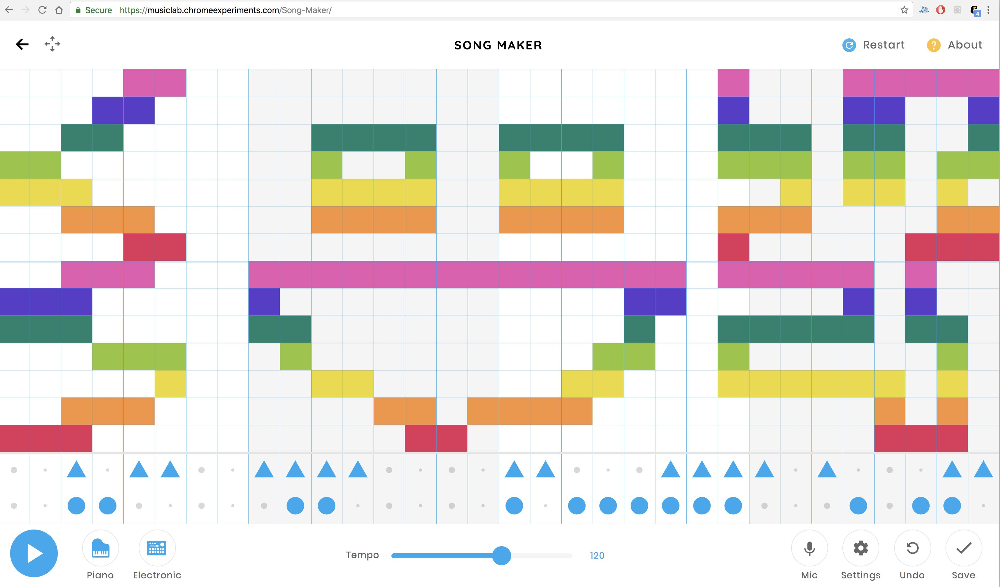
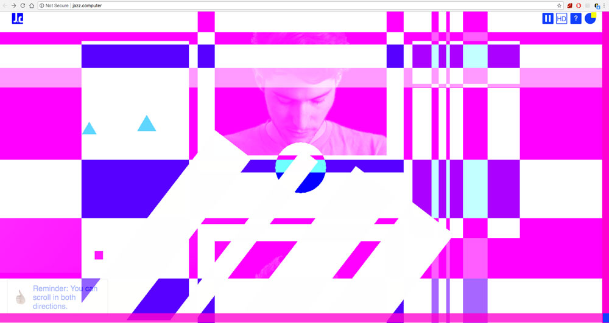
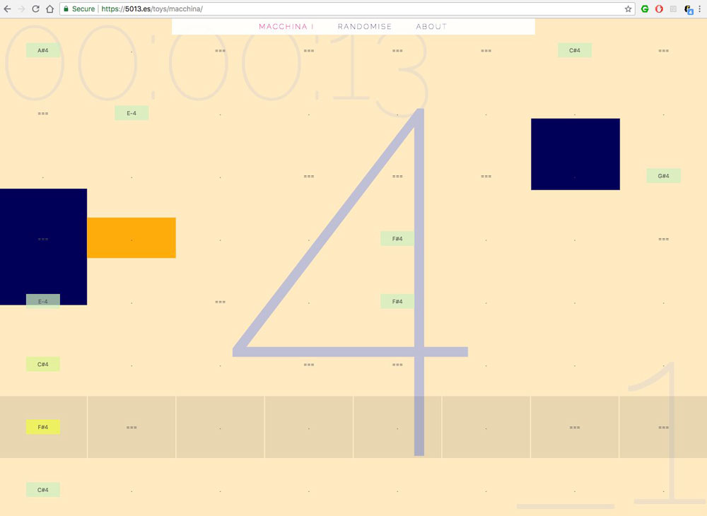

Week 1: GENERATIVE Music
Song Maker by Chrome Music Lab.
Patatap and Typatone by Jono Brandel and Lullatone
Jazz Computer by Yotam Mann and Sara Rothberg
MACCHINA by 5013
With data: created using MusicAlgorithms developed by Jonathan Middleton.
Terry Riley's In C performed by Fighting Windmills & Sethstat.